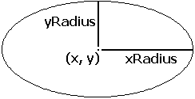

Draw.Oval
Syntax
Draw.Oval (x, y, xRadius, yRadius, Color : int)
Description
The Draw.Oval procedure is used to draw an oval whose center is at (x, y). The horizontal and vertical distances from the center to the oval are given by xRadius and yRadius.

Example
This program draws a large oval that just touches each edge of the screen in magenta. The maxx and maxy functions are used to determine the maximum x and y values on the screen. The center of the oval is at (midx, midy), which is the middle of the screen.
View.Set ("graphics")
const midx := maxx div 2
const midy := maxy div 2
Draw.Oval (midx, midy, midx, midy, magenta)
Details
Ideally, a circle is drawn when xRadius = yRadius. In fact, the aspect ratio (the ratio of height to width of pixels displayed on the screen) of the IBM PC compatibles is not 1.0, so this does not draw a true circle. In CGA graphics mode this ratio is 5 to 4.
The screen must be in a "graphics" mode. See the View.Set procedure for details. If the screen is not in a "graphics" mode, an error will occur.
Status
Exported qualified.
This means that you can only call the function by calling Draw.Oval, not by calling Oval.
See also
View.Set, maxx, maxy and the various procedures in the Draw unit.